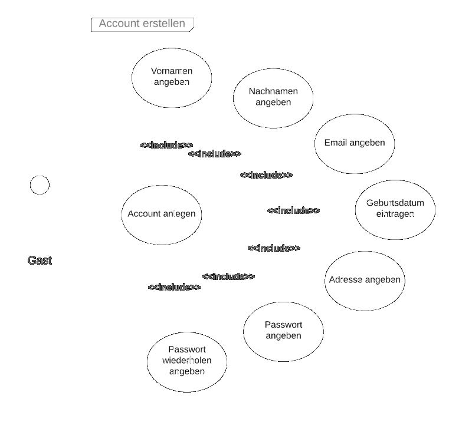
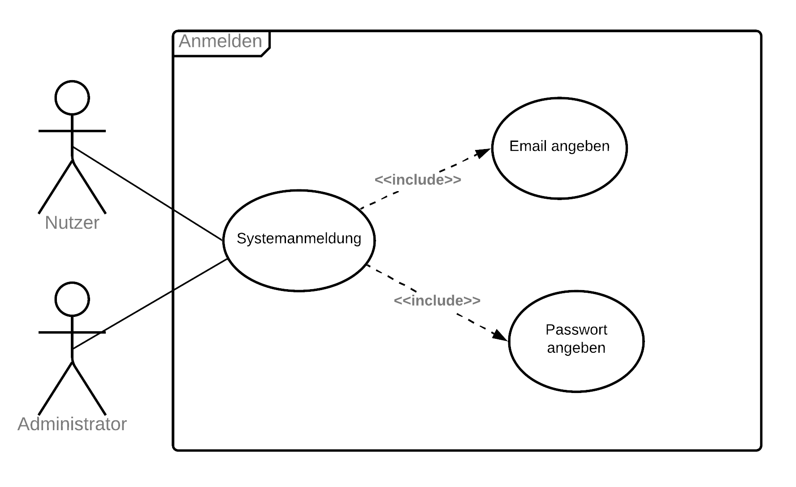

- Branschutz
- Eingabeplanung
- Tragwerksplanung
- Wärmeschutz
Zudem ist ein Onlineshop geplant, in welchem aktuelle Angebote und Dienstleistungen bequem von Zuhause oder Unterwegs gekauft oder gebucht werden können.
Zudem ist ein Onlineshop geplant, in welchem aktuelle Angebote und Dienstleistungen bequem von Zuhause oder Unterwegs gekauft oder gebucht werden können.
Wie bereits erwähnt ist der Zweck der Onlinepräsenz, den Gästen und Kunden einen Einblick in die Dienstleistungen des Ingenieurbüros zu vermitteln. Zudem steht im Mittelpunkt die Kommunikation zwischen interessenten und den Mitarbeitern des Büros, um vor einem Kauf einer odere mehrerer Dienstleistungen, beratend tätig zu werden.
Der Administrator muss Accounts verwalten, d.h. löschen- und vergabe von Rechten an angemeldete Nutzer.
Gäste sollen sich registrieren und anmelden können um Produkte und Diensleistungen zu ordern. Zudem soll ein Gast seine Daten ändern und ein neues Passwort anfordern können.
Wichtig zu beachten ist, die Anbindung an einen Email-Server, zur Kontaktaufnahme und Passwortrücksetzung im Rahmen des Modulprojektes, aufgrund der technischen Gegebenheiten und Vorgaben Seitens der Dozenten, nicht implementiert wird.
Beispielsweise gefiel uns und unserem Auftraggeber der Webauftritt von Firma Geologie Veith besonders gut; https://www.geologie-veith.de

Wir fanden die gesamte Struktur der Seite sehr interessant und vor allem hat uns die Slideshow auf der Landingpage inspiriert. Wir haben diese inspiration genommen und sie in ähnlicher form umgesetzt.
Auch fanden wir den Footer dieser Webseite sehr interessant, vor allem die hat uns die Karte zum Firmensitz beeindruckt.

Auf der Homepage der Umweltbank fanden wir ein schöne möglichkeit Artikel in mobilen Ansichten darzustellen. Zudem gefiel uns das schlichte Design der Homepage, Weiß und eine Kontrastfarbe, auch dies floss in unsre Designentscheidung ein; https://www.umweltbank.de/

| Attribut | Typ | Länge | Notwendigkeit | Bedingung | Anmerkung |
|---|
Für das Projekt wurden 3 verschiedene Rollen berücksichtigt hierzu zahlen:
Die nachfolgenden Use-Cases sollen zur Verdeutlichung der jeweiligen Szenarien beitragen

Abbildung: Business Use Case
Abbildung: Warenkorb verwalten
Abbildung: Konto verwalten
Abbildung: Account erstellen
Abbildung: Anmelden
Abbildung: Accounts verwalten
Da in unserer Zusammenarbeit verschiedene Browser zum darstellen der Website benutzt wurden, sind relativ früh kleinere Unterschiede aufgetaucht die sich jedoch einfach beheben ließen indem wir die Standardeinstellung der einzelnen Elemente weiter eingegrenzt hatten (benutzt wurden Chrome, Firefox und Microsoft Edge).
Bei einem Endgerät war es nicht möglich das Impressum zu laden (selbst bei vollständiger Funktion aller anderen Seiten). Leider konnte dieses Problem auch nach mehrmaligen durchsehen der html, sowie der css nicht identifiziert und damit auch nicht behoben werden.
Eine größere Schwierigkeit stellte die Umsetzung des responsiven Designs dar, da wir mit der Desktop Variante anfingen. Aber nach einiger Zeit und mit viel Geduld gelang uns auch dies zu unserer Zufriedenheit umzusetzen.
Das größte Problem während unseres Projekts entstand knapp nach der Hälfte der Zeit, bei der uns nach mehreren Rücksprachen mit den zuständigen Professoren klar wurde, dass unsere Seite nicht den Maßstab der Projektarbeit entspricht und wir dadurch gezwungen waren noch einmal ein Großteil unserer Ideen und Vorstellung zu verwerfen. An diesem Punkt brachen wir auch die Zusammenarbeit mit dem Inhaber der Firma IBHorsch ab, um uns vollständig auf die Umsetzung der wesentlichen Aspekte zu konzentrieren, hierunter zählte vor allem die Implementierung und den Ausbau des Shops.
Keine feste Seitenhierarchie bis beinahe zum letzten drittel des Projekts, führte zu einer gewissen Unordnung was sowohl die Benennung der Dateien und Elemente, als auch die Ordnerstruktur angeht. Doch nach festlegen der bestehenden Seiten und das Entfernen der überflüssigen Seiten war dies auch schnell in den Griff zu bekommen.
Anfängliche Probleme gab es bei der Nutzung von der main Branch als einziger Branch, da dies mehr als einmal zu Merge Konflikten führte, dies ließ sich jedoch leicht durch die Nutzung verschiedener Branches regeln.
Es stellte sich als Vorteil heraus, eine klare Aufgabenteilung durchzuführen wodurch jeder sein Fachgebiet besaß und es ihm möglich war, anschließend die jeweiligen anderen in seine Arbeit einzuführen und Verständisfragen zu klären. Dadurch gelang es uns Arbeit durch eigen Expertise schnell zu erledigen, sich dabei nicht gegenseitig zu behindern und dennoch ein umfassendes Wissen der gesamten Thematik zu erschließen.
Zur Aufgabenstrukturierung entschieden wir uns für Trello, da es die Möglichkeit besaß uns selbst Termine und Fristen zu setzen an die wir uns größtenteils hielten, bzw. es zu ersehen war, wenn es zu Schwierigkeiten kam. So gelang es uns, in dem Projekt einen Überblick zu behalten nicht nur was eigene Aufgaben anging, sondern auch die der Teammitglieder, um evtl. benötigete Hilfe anbieten zu können.